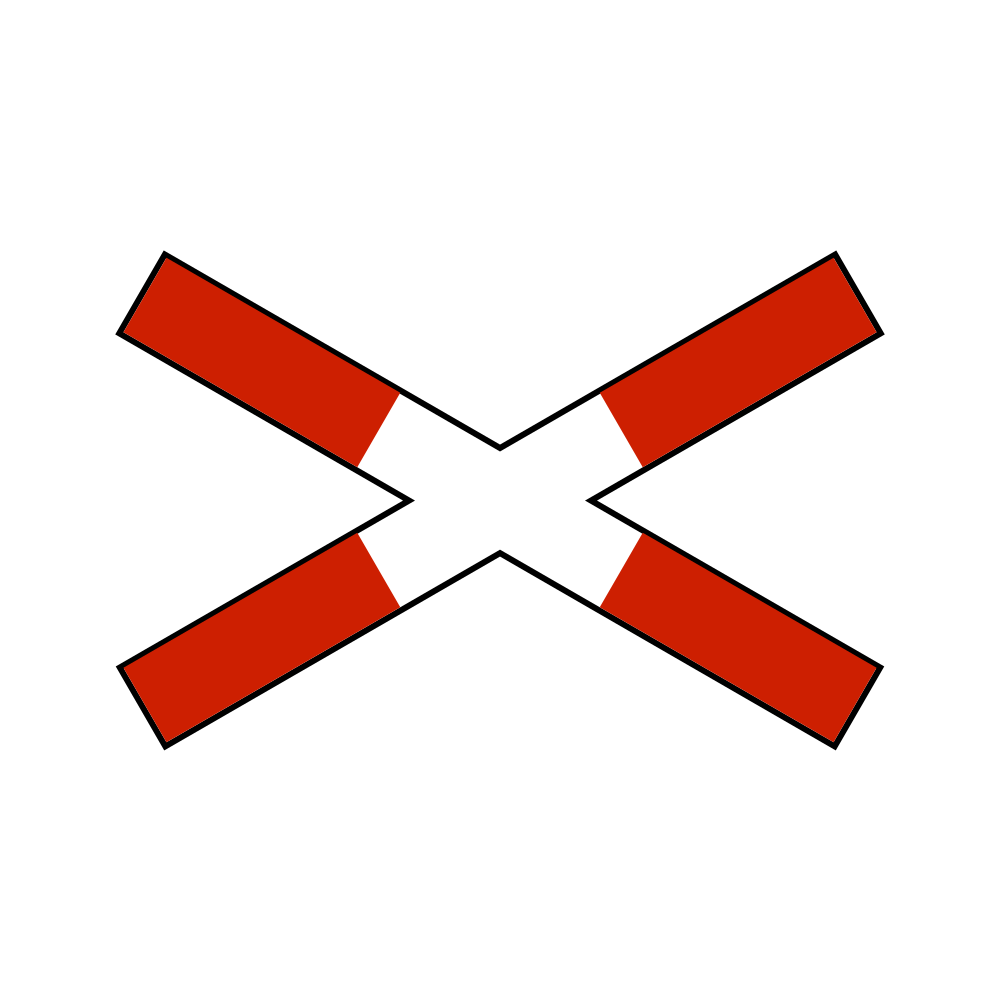
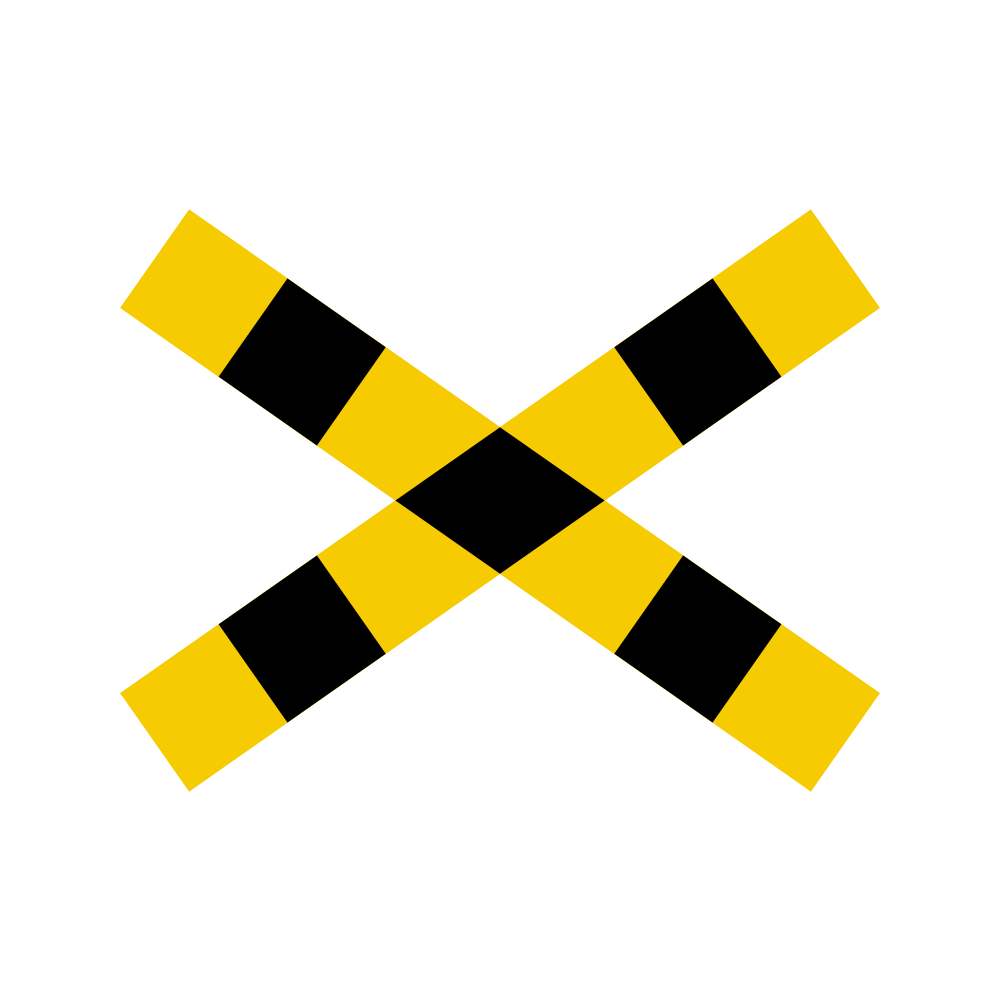

Crossbuck
History
The crossbuck saw widespread use at railroad crossings by 1900. The Henry Ford museum traces its design to the skull and crossbones, a universal symbol of danger. The 1968 Vienna Convention on Road Signs and Signals specifies a cross-shaped sign at level crossings, in white or yellow with a red or black border.
Adoption
The X marks level crossings around the world, most often in red and white. The United States spells out "Railroad Crossing" in black on white, while Japan uses yellow and black stripes.
Sources
US

